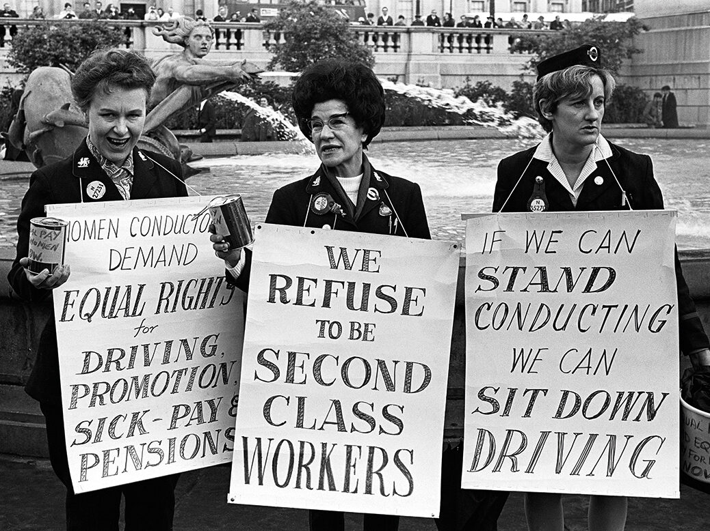
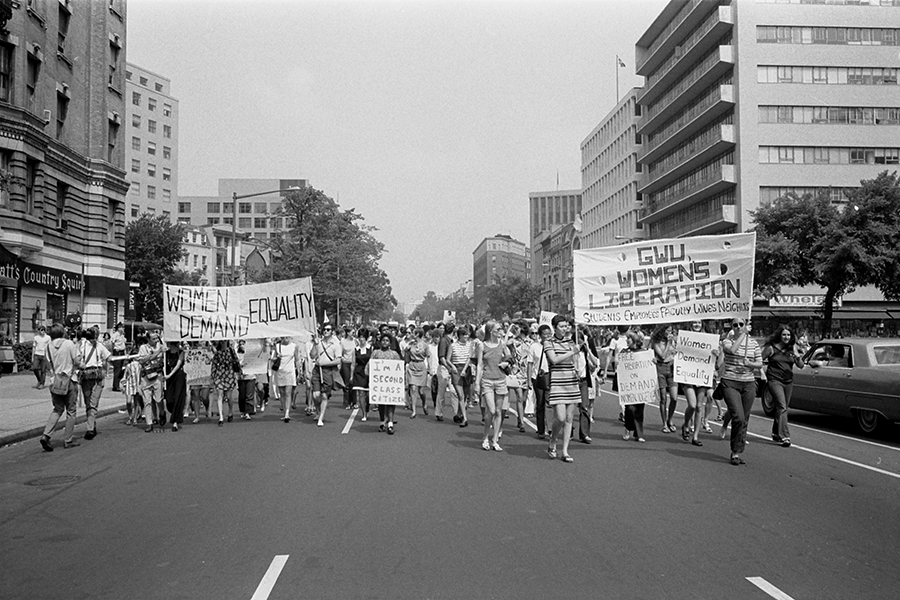
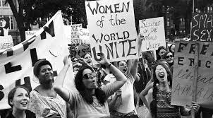

Feminizam se pojavio u zapadnim zemljama u IX vijeku kao jedna od posljedica industrijske revolucije. Manfestovao u dva oblika:
Razvoj mašina smanjio je potrebu za ljudskim radom, postepeno eliminišući jednu od prednosti koju su muškarci imali nad ženama,
što je ženama omogućilo da postanu sve važniji dio radne snage, posebno tokom Prvog svjetskog rata kada su zamijenile muškarce
na frontu.
Kako je politička i ekonomska ravnopravnost žena postignuta u institucionalnom smislu, feminizam se postepeno razvijao
u novi oblik, takozvani "radikalni feminizam", čiji je cilj bio da promijeni tradicionalnu ulogu žena u društvu kroz napade
na brak i majčinstvo kao tradicionalne institucije. Iako je relativno mali broj žena prihvatio ovaj stav, danas se feminizam
najviše povezuje s njim.
Prema strukturi pokreta, feminizam se najčešće dijeli na tri "vala":


